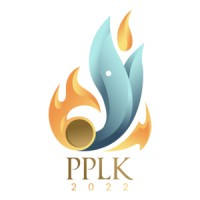

Experience
Himpunan Mahasiswa Teknik Informatika
1. Head of Development & Training Division Professionalism
January 2024 - Present South Lampung Regency, Lampung, Indonesia- Leadership and Strategy: Setting the strategic direction of the division and organizing activity schedules, Allocating resources, Leading and motivating the team.
- Program Development and Management: Supervise the organization of seminars/webinars, Manage final project exhibitions, Facilitate project and technology discussions, Coordinate workshop development.
- External Relations and Collaboration: Building relationships with industry professionals, Maintaining communication with other departments.
2. Staff of Development & Training Division Professionalism
April 2023 - January 2024 South Lampung Regency, Lampung, Indonesia- Organize seminars/webinar on technology.
- Held an exhibition of the final project of Itera informatics graduates.
- Provides a platform to discuss together about projects and the world of technology.
- Holding workshops on technology themes such as html, css, and github.
Skill : Leadership, Communication, Public Speaking, Presentations, Teamwork
Institut Teknologi Sumatera
1. Laboratory Assistant for Human-Computer Interaction Course
September 2024 - December 2024, Part-time South Lampung Regency, Lampung, Indonesia- Guided students in understanding fundamental principles of User Interface (UI) and User Experience (UX) design.
- Provided tutorials on using design tools like Figma, Adobe XD, or similar platforms to create interactive prototypes.
- Assisted students in analyzing and evaluating the usability of existing digital interfaces.
- Delivered hands-on sessions to teach wireframing, prototyping, and user testing methodologies.
- Facilitated group projects by mentoring teams in implementing effective UI/UX designs.
- Supported lecturers in conducting workshops and practical sessions on human-centered design approaches.
- Reviewed and provided constructive feedback on student UI/UX design assignments and projects.
2. Computer Lab II
January 2023 - May 2023, Part-time South Lampung Regency, Lampung, Indonesia- Guide students in grasping foundational and advanced concepts of C++ programming.
- Explain syntax, control structures, function usage, and Object-Oriented Programming (OOP) principles in C++.
- Support lecturers or instructors during practical sessions by providing demonstrations and detailed explanations when needed.
- Assist students in troubleshooting technical issues related to computers and software in the laboratory.
3. Computer Lab I
September 2024 - December 2024, Part-time South Lampung Regency, Lampung, Indonesia- Assist lecturers in guiding and supporting learning activities such as answering questions, discussing with students, helping and overcoming obstacles encountered during practicum sessions.
- Assist or guide students in effectively utilizing Microsoft Word and Excel.
- Offer tutorials or support on both basic and advanced features of Word and Excel.
- Support students in understanding and completing assignments or projects involving Microsoft Word and Excel.
Skill : User Interface Design, User Experience, Figma, Mentoring, C++, Microsoft Word, Microsoft Excel
PT
Perkebunan Nusantara I Regional 7
Back-End Engineer
Juni 2024 - August 2024, Internship Bandar Lampung, lampung, Indonesia- Integrating the GEMINI API with the Telegram chatbot to create responsive and human-like interactions.
- Analyzing system requirements and designing technical solutions for the integration of the GEMINI API with the chatbot.
- Using Python and related libraries to build and develop a system that can access and process data from the company’s database.
- Testing and evaluation to ensure the chatbot can answer employee questions accurately and quickly.
- Identifying and analyzing relevant data from the company’s database to support the development of the chatbot.
- Providing data-driven insights and recommendations to improve the chatbot’s ability to provide accurate responses.
- Processing raw data by applying SQL logic and then visualizing it.
- Developing and ensuring backend connectivity to effectively connect the chatbot system with the company’s database.
- Ensuring effective communication between the chatbot and the database.
- Identifying and resolving bugs or issues within the chatbot system to improve overall quality and performance.
Skill : API Development, Python (Programming Language), Back-End Development, MySQL, Laravel
PEMIRA KM ITERA 2022
Staff of Voting at Implementation Technology Division
November 2022 - February 2023 South Lampung Regency, Lampung, Indonesia- Designing a web appearance using figma which contains student presidential election activities of the Sumatra Institute of Technology.
Skill : Figma, Communication, Teamwork

Program Pengenalan Lingkungan Kampus (PPLK) ITERA 2022
Program Pengenalan Lingkungan Kampus (PPLK) ITERA 2022
Staff of Content Research at Implementation Technology Division
June 2022 - August 2022 South Lampung Regency, Lampung, Indonesia- Search, analyze, and process data/information to be used in website or application.